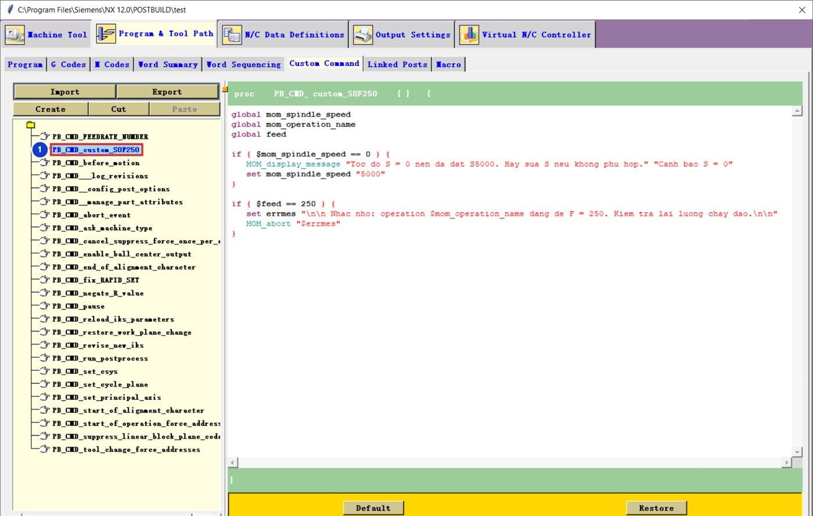
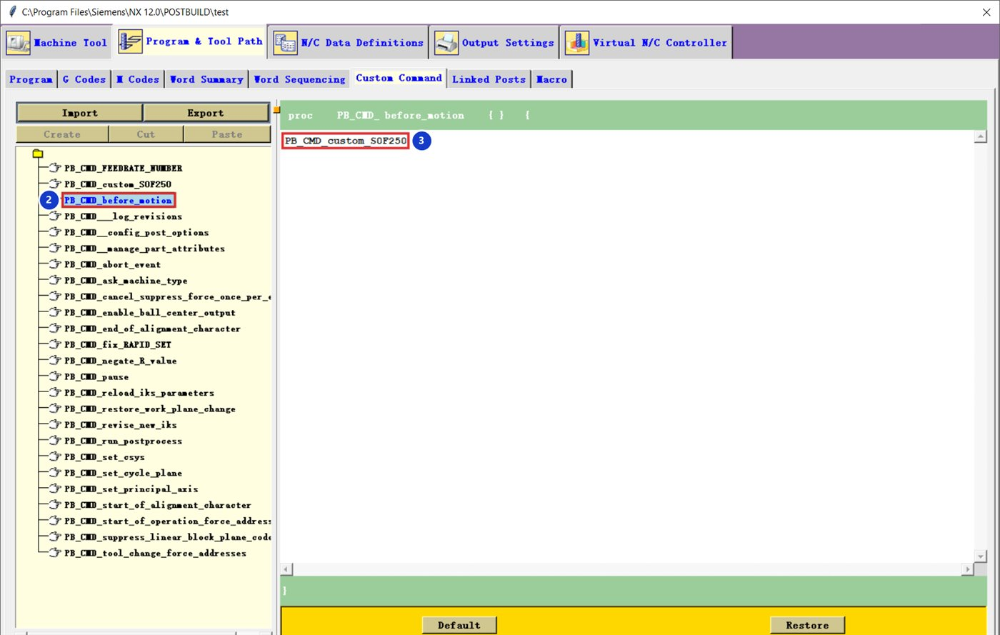

Tải về: code dán vào Post Builder.
01Tạo lệnh
Tạo lệnh custom_S0F250
Program & Tool Path → Custom Command → Create, tên custom_S0F250 1, dán code:
global mom_spindle_speed
global mom_operation_name
global feed
if { $mom_spindle_speed == 0 } {
MOM_display_message "Toc do S = 0 nen da dat S5000. Hay sua S neu khong phu hop." "Canh bao S = 0"
set mom_spindle_speed "5000"
}
if { $feed == 250 } {
set errmes "\n\n Nhac nho: operation $mom_operation_name dang de F = 250. Kiem tra lai luong chay dao.\n\n"
MOM_abort "$errmes"
}

PB_CMD_custom_S0F250.02Gọi lệnh trong
Gọi lệnh trong PB_CMD_before_motion
Chọn PB_CMD_before_motion 2 (NX gọi lệnh này trước mọi chuyển động), thêm một dòng 3:
PB_CMD_custom_S0F250

Đừng dán dòng gọi lệnh vào chính nó
Dòng PB_CMD_custom_S0F250 chỉ đặt trong before_motion. Nếu dán vào bên trong PB_CMD_custom_S0F250, lệnh tự gọi lại chính nó và post bị treo.
Đổi giá trị
| Muốn | Sửa |
|---|---|
| Tốc độ thay thế khác 5000 | "5000" ở 2 chỗ |
| Chặn giá trị F khác | 250 ở dòng if |
| Chỉ nhắc, không dừng khi F = 250 | MOM_abort → MOM_display_message |
Thông báo viết không dấu vì cửa sổ Tcl của NX 12 thường lỗi font tiếng Việt có dấu.